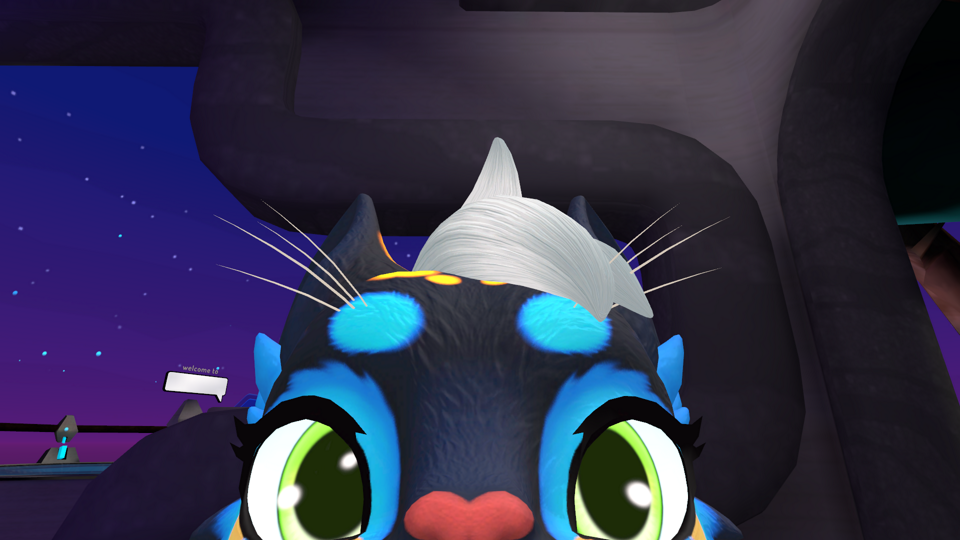
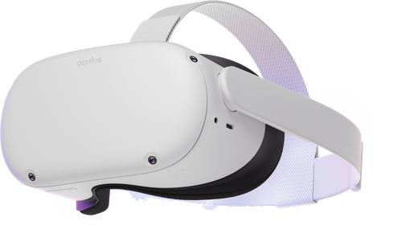
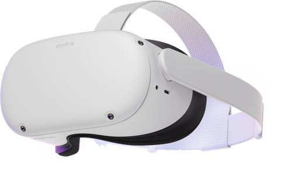
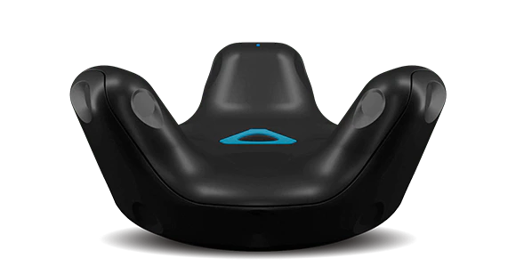

Floood | 15/11/2022
VRChat : Over 1000 Hours In
 At the time of writing this, I have 1106 hours in vrchat according to Steam. I have two VR headsets, and "full body tracking". (Yes, I have legs, Meta!) With all the recent news about metaverses, I find that one very specific place always seems to be left out. The world of VRChat. I have been playing VRChat for just over two years now, and my experiences should demonstrate something different than most modern media outlets, who have not spent as much time whithin.
 To begin, I will talk about equipment. As of right now, I am using the Valve Index VR headset. The valve index is not the newest VR Headset, being released in 2019, although it does still have the most advanced controllers, which have relatively good finger tracking compared to many other options. I upgraded to the Valve Index from the Meta Quest 2, and find that the only thing that the Quest 2 did better was the lenses. The Index has more glare in the lenses that is noticable only in scenes with extreme contrast in white and black. For me as a regular VR user, I would have to say that I do enjoy using the Index more than the Quest Two, becuase of it's more advanced controller and the more immersive audio. The audio on the index is able to achive a much wider sound stage than the Quest Two, thanks to it's off-ear headphone design, and the Index's cable being directly connected to the graphics card on my PC means that the video signal will have less latency and it will not suffer from compression artifacts. I also like the sliding IPD the index offers over the Quest 2's three click slider. The Valve Index also has a wider Field of View, allowing for more immersion within the VRChat Worlds. Upgrading to the Valve Index still feels like the right choice to me.
To begin, I will talk about equipment. As of right now, I am using the Valve Index VR headset. The valve index is not the newest VR Headset, being released in 2019, although it does still have the most advanced controllers, which have relatively good finger tracking compared to many other options. I upgraded to the Valve Index from the Meta Quest 2, and find that the only thing that the Quest 2 did better was the lenses. The Index has more glare in the lenses that is noticable only in scenes with extreme contrast in white and black. For me as a regular VR user, I would have to say that I do enjoy using the Index more than the Quest Two, becuase of it's more advanced controller and the more immersive audio. The audio on the index is able to achive a much wider sound stage than the Quest Two, thanks to it's off-ear headphone design, and the Index's cable being directly connected to the graphics card on my PC means that the video signal will have less latency and it will not suffer from compression artifacts. I also like the sliding IPD the index offers over the Quest 2's three click slider. The Valve Index also has a wider Field of View, allowing for more immersion within the VRChat Worlds. Upgrading to the Valve Index still feels like the right choice to me.
Now that we are done with hardware, I can get to my real experiences in VRChat. Just to preface, the people that I speak to in VRChat are typically furries, and my experiences do not represent a majority of VRChat players. However, furries have suprisingly varied viewpoints on many different issues, and I feel that they demonstrate all sides of the coin. I started playing VRChat in October of 2020, and back then I had not yet come to the realization that I was transgender. When I started out in VRChat, I was learning the ropes, as a brand new "questie". Back then it was all fun and games, and I would speak to many memey people. However, even back then, I was able to have in-depth converstations with many people, but I no longer speak to many of those old friends. It was in this early stage I discovered furries, and just ended up falling face first into the community. Many of these early furry friends I still speak with to this day, and have some good memories with.
In this time, I also discoverd a larger truth about myself. I was transgender. Ever since the age of nine, I have wanted to have the power to magically transform into a girl, wether it be through a genie, wish granting fairy, or random serum. In VRChat, I learned what that meant, and I decided to experiment. I tried using female avatars and changed the way I identified, and found that I wanted a to be viewed as a woman, and to have the body of a woman. Meeting other trans people in VRChat was defenetly a helpful experience, and it showed me that I am not alone in my struggle.
After a while of owning the Quest 2 and playing standalone, I decided to take the next step, and try connecting my Quest 2 to my PC. I tested all sorts of solutions, and found that Virtual Desktop was the most reliable. Around a year in, I wanted something more for my VRChat, so I decieded to get the first steps into getting the fabled "Full Body Tracking". I bought a single Vive Tracker (2018) for my hip and a HTC Base Station to get started. This enabled me to move my hip in VR, yet I still had no feet. In this period of time, I played a lot with more specifc friend groups, not just public worlds. I kind of avoided public worlds, and mostly stuck with those specific friend groups.
Eventually, there came some big news. The Tundra Trackers were being announced on their kickstarter page. I was one of the original backers of these trackers, and I own two trackers. With these new trackers I now had true full body, as with feet, a hip, a head, and hands, the computer can use a system called inverse kinematics to determine the location of the other body parts. This brought with it even more immersion into the world of VRChat, and more time spent in the game.
At around the year and half mark, I started going back to public worlds. In public worlds, I was able to get outside of my friend bubble, and I met more cool people, as well as had endless fun watching bullies try to bully us furries for being furries, and confusing them. However, even though I was meeting new people everyday, it was a little lonely to not see many returning faces.
To conclude, I've had many good experiences, and some bad experiences. I've met many awesome people who have changed my life for the better, and a few people who have been bad influences. I've met funny people, talented people, serious people, people on both the left and the right of the polical spectrum, people who are completly normal, and people who fall entirely out of social norms. I've used two different VR Headsets, spent around 2000$ on VR equiptment, and more. VRChat is a strange place, with strange people, but no matter what, It'll be one of my favorite games to play. More than that, it'll be one of my favorite places to go. So don't judge VRChat by your first experiences, and explore the worlds it has to offer. It's free, and you don't even need a VR Headset to play. So go out there and try it out for yourself!